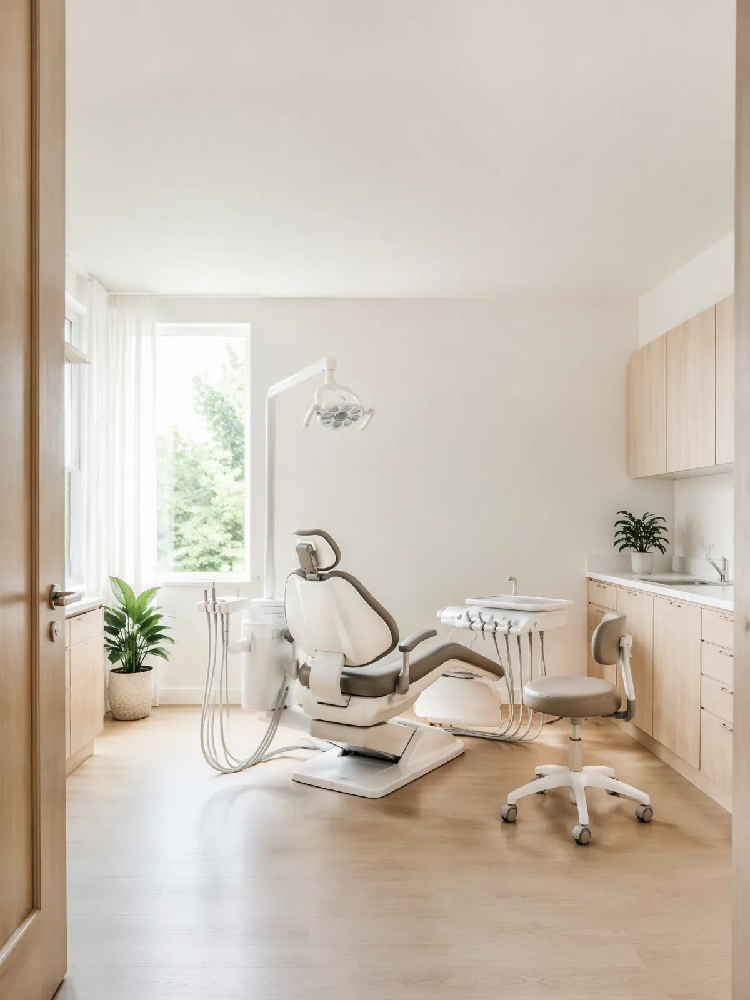
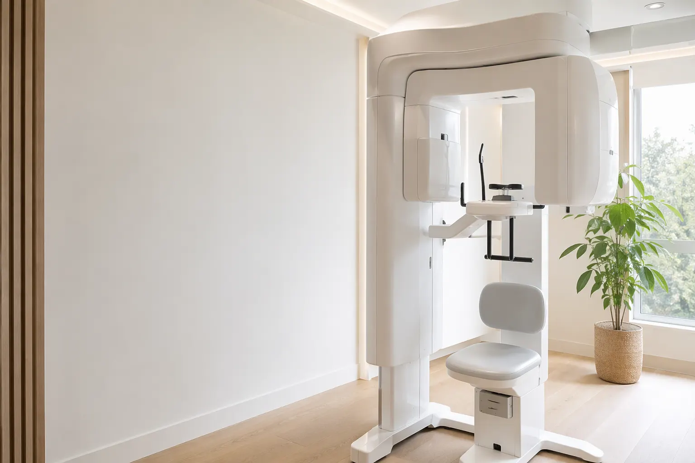
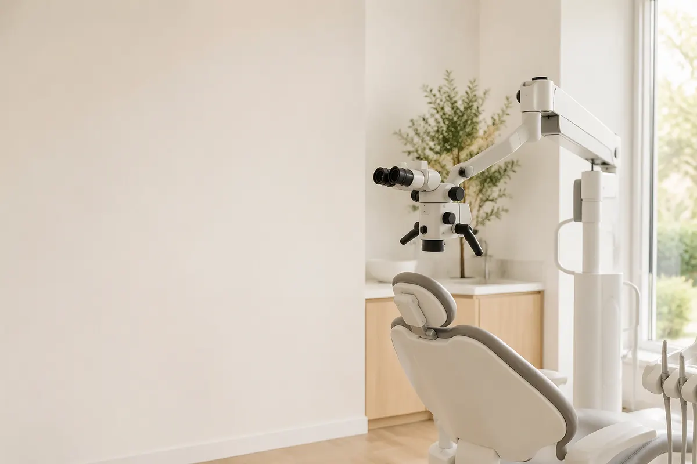
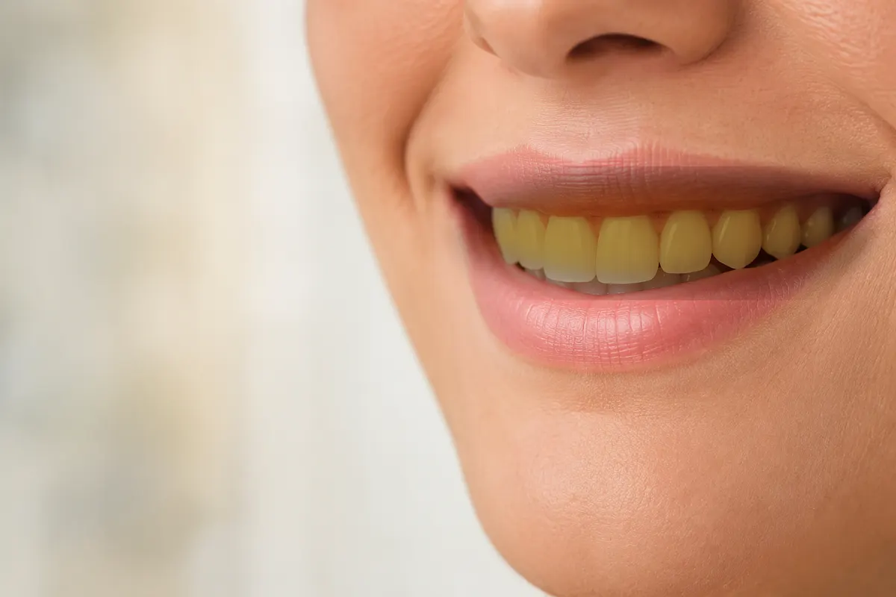
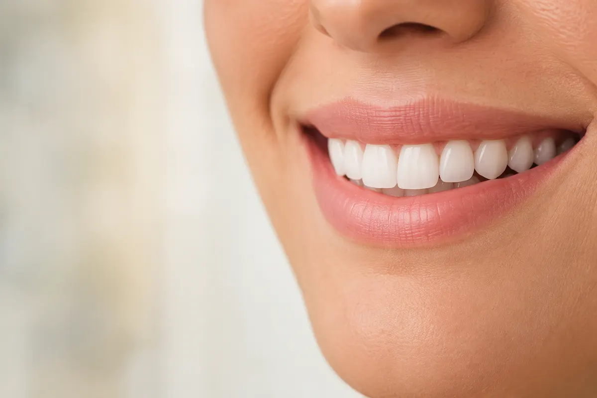

Клиника, в которой не страшно
Один светлый кабинет, два врача, честные цены до начала и никаких «потерпите ещё чуть-чуть». Покажем всё: от стерилизации до результата.
Один кабинет вместо коридоров кабинетов
Принимаем по записи, пациентов в клинике в один момент – один или два. Никто не ждёт в коридоре под звуком бора, и никто не слышит чужого лечения.
- Только по записиМежду приёмами – время на переборку и стерилизацию кабинета
- Музыка вместо бора в коридореВ кабинете – наушники по желанию и пауза, когда нужно передохнуть
- Поднять руку – и врач остановитсяДоговорённость с первой минуты: любой жест пациента означает паузу
- Сначала объясняем, потом лечимСнимок и план – до анестезии, а не после
- Можно уйти просто с планомОсмотр не обязывает к лечению. Решение – за вами


КТ в клинике, а не «по направлению»
Снимок делаем в тот же визит, что и осмотр, и сразу смотрим его вместе на экране. Имплантация и удаление зубов мудрости без КТ – это угадайка, поэтому у нас она не делается.

Лечение под микроскопом
Микроскоп увеличивает рабочее поле в десятки раз: врач видит границу кариеса точно и снимает только поражённое. Здоровая ткань остаётся – зуб живёт дольше.
Потяните ползунок и посмотрите разницу
Результат профессиональной чистки и отбеливания в нашем кабинете. Так выглядит один визит к гигиенисту.


Фото демонстрационное · согласие на публикацию получено

Посмотрите кабинет сами
Осмотр, снимок при необходимости и план с ценой – письменно. Лечить начинаем только после вашего решения.